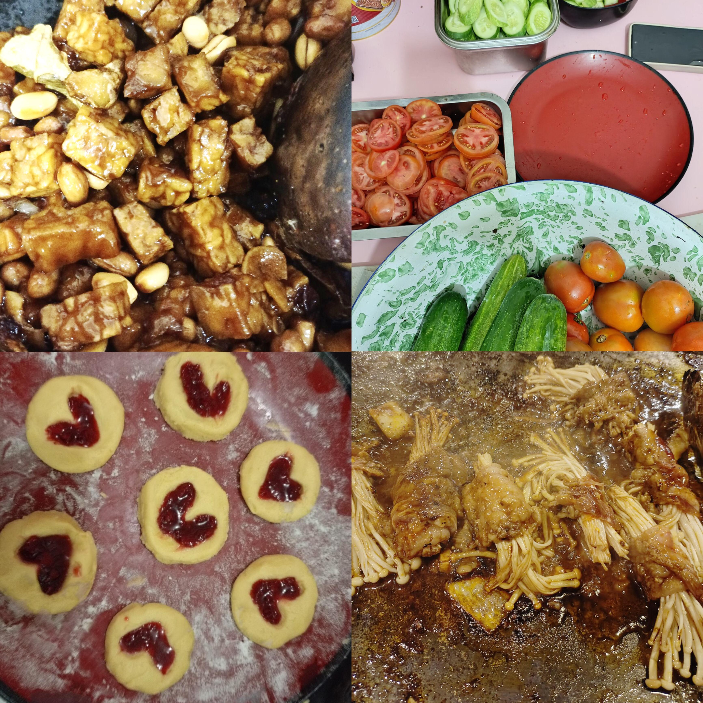
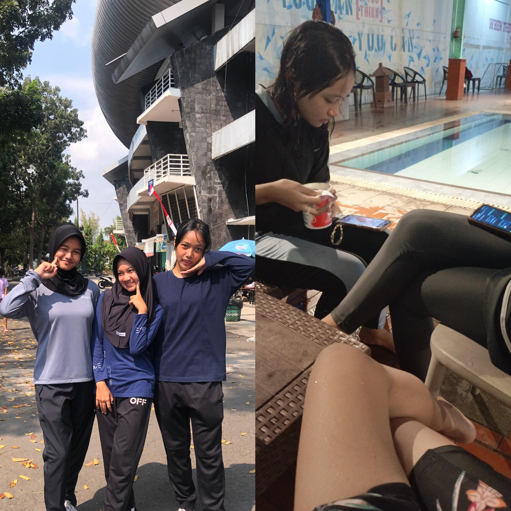

|
Gunung adalah sajak sunyi yang ditulis langit di tubuh bumi,
yang menjulang bukan untuk disombongkan,
tetapi untuk mengajarkan bahwa diam pun bisa agung.
yang menyimpan rindu dalam kabut,
dan menenangkan luka dalam bisu.
Pantai adalah perbatasan sunyi antara langit dan laut,
tempat ombak datang membawa pesan,
dan angin menyapu pelan segala gundah yang tertinggal.
Aku adalah pengagum, aku selalu tertarik akan ketinggian
yang dingin. Aku suka mendaki gunung, walaupun belum
banyak gunung yang ku pijak namun akan banyak suatu saat.
Aku adalah perindu alam, yang selalu piris dan penerima
tantangan yang tak pernah habis. Aku tenang di sisi alam,
mulai dari umurku saat ini aku ingin mencari pengalaman
dengan berbagai rintangan, aku ingin mencoba semua tantangan
dan berpetualang di banyak tempat yang belum pernah aku
kunjungi. Lelah tapi tak terpatah, bukan masalah seberapa
lelah aku mendaki gunung dan menyusuri lautan tapi
seberapa indah aku menikmati alam. Tak hanya gunung, juga
pantai dan lautan yang aku suka, entah dataran tinggi
ataupun dataran rendah.
|
 |
|
Di keseharian ku, aku sering membuat kue, browmies, cookies, dan masakan lainnya di waktu
luangku. Memasak mengajarkan sabar, teliti, dan cinta. Resep hanyalah panduan, rasa datang dari hati.
Hobi masak membuat hidupku lebih berwarna. Memasak itu bukan hanya tentang makanan, tapi tentang kebahagiaan yang dibagi.
|
 |
 |
Dan di waktu luangku yang lain juga aku berolahraga.
Biasanya aku lari pagi bersama orang tuaku atau berenang bersama teman temanku.
Aku lari pagi saat libur tiba dan aku berenang
di waktu sore saat aku menginap bersama teman temanku.
|
|